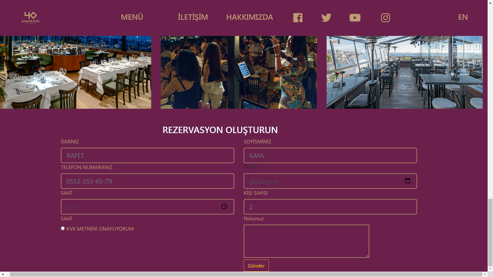
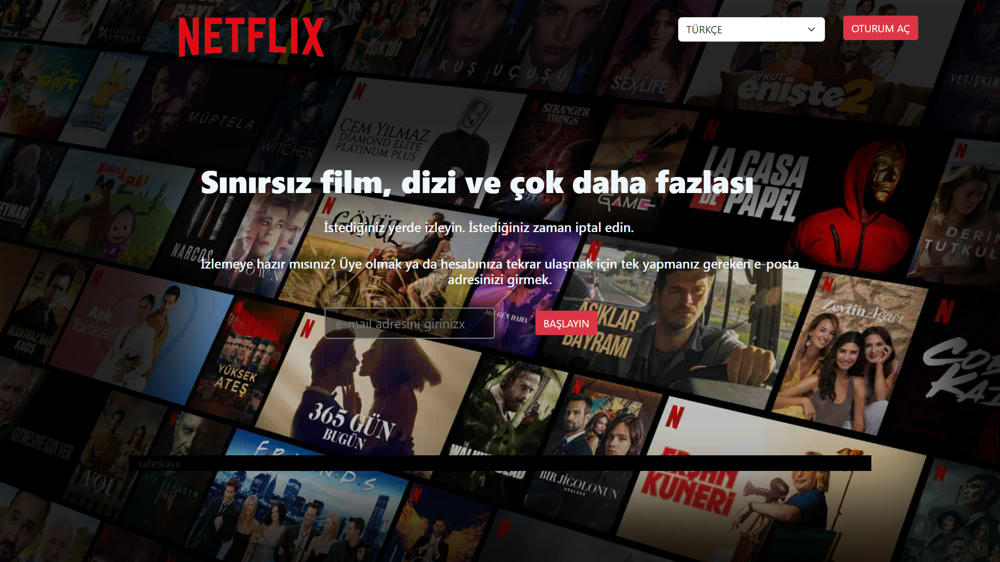
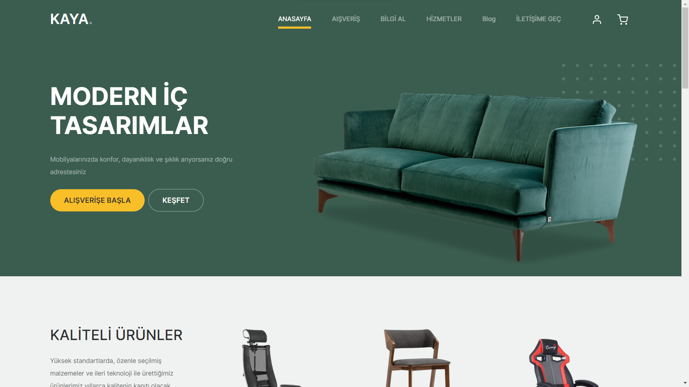
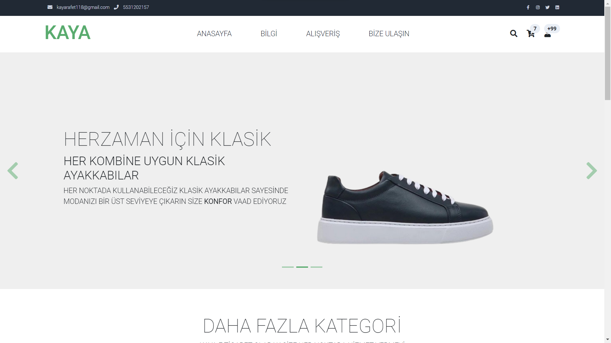

Edindiğim deneyimleri sergileyebilmek ve bir web geliştirici olarak neler yapabileceğimi gösterebilmek
adına kişisel bir portfolyo sitesi geliştirdim. Bu sitede kullandığım teknolojilere, bugüne kadar yaptığım
projelere ve sahip olduğum beceri setine yer verdim.

RESTOURANT WEB SİTESİ
"Web geliştirme becerilerimi sergileyebilmek adına örnek bir restoran websitesi hazırladım. Kullanıcıların kolaylıkla menuyu inceleyebilecekleri, masa rezervasyonu yapabilecekleri ve iletişim bilgilerine ulaşabilecekleri bir site oluşturmayı hedefledim

NETFLİX
Web geliştirme yeteneğimi gösterebilmek adına, tasarım ağırlıklı bir restoran websitesi hazırladım. Kullanıcıların sitede kolaylıkla menüye göz atabilecekleri ve iletişim bilgilerine erişebilecekleri sade ama modern bir interface tasarladım.

MOBİLYA MAĞAZASI
"KAYA MOBİLYA" adlı kapsamlı bir mobilya e-ticaret sitesi geliştirdim.
Sitede müşteriler çeşitli oda takımları, koltuklar, yatak odası mobilyaları, mutfak mobilyaları ve daha fazlası arasından seçim yapabilir. Siteinin yapımında html css bootstrapt ve javascript kullandım.

E TİCARET SİTESİ
"Sitede modern bir arayüz tasarımı, kategorilere göre ürün tarama, sepete ekleme ve ödeme alma gibi temel e-ticaret özelliklerini başarılı bir şekilde uyguladım. Ödemeleri güvenli bir şekilde alabilmek için Stripe API entegrasyonu gerçekleştirdim.